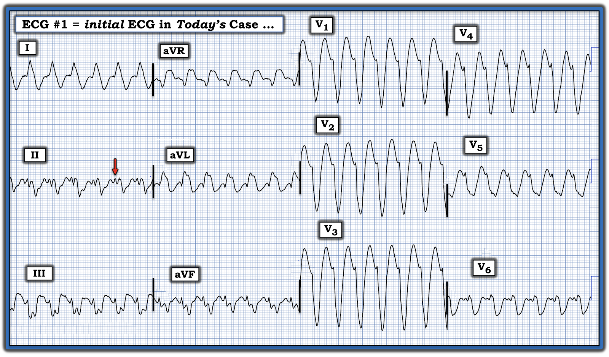
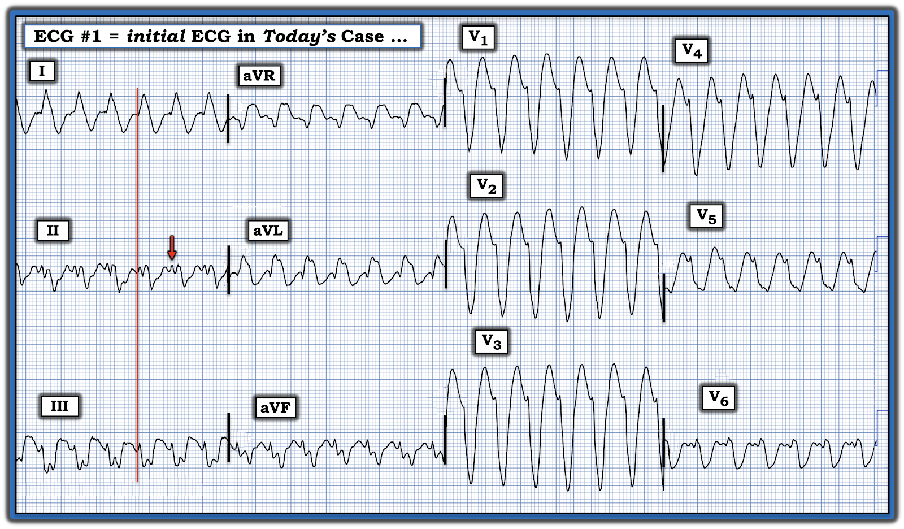
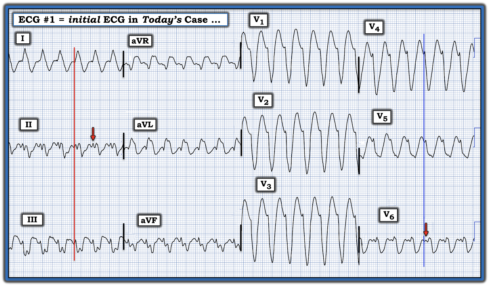
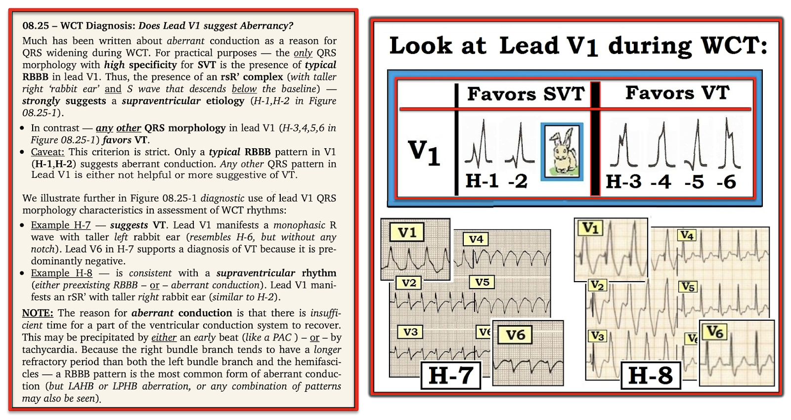
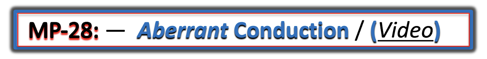

ECG Blog #473 — Nhịp nhanh xoang & loại BBB gì?
Bạn được xem điện tâm đồ ở Hình-1 — mà không có chút bệnh sử nào.
CÂU HỎI:
Bản ghi này đã được đọc là nhịp nhanh xoang kèm một loại BBB nào đó (blốc nhánh – Bundle Branch Block).
- Đây là loại BBB gì?


TRẢ LỜI:
- Không có blốc nhánh nào cả — vì nhịp này không phải nhịp nhanh xoang.
ĐIỂM THEN CHỐT (PEARL) #1: Một trong những chân lý tôi ưa thích nhất là: "12 chuyển đạo tốt hơn một". Ý tôi muốn nói là vì một phần của phức bộ QRS đôi khi có thể nằm trên đường đẳng điện — nên QRS có thể trông hẹp hơn thực tế — NẾU — chuyển đạo duy nhất đang được theo dõi lại chính là chuyển đạo có một phần QRS nằm trên đường đẳng điện.
- Ca hôm nay có một vấn đề liên quan: phần QRS ở chuyển đạo II nằm trên đường đẳng điện — khiến ta tưởng như sóng lệch dương nhỏ ở chuyển đạo này (được mũi tên ĐỎ đánh dấu) là một sóng P xoang.
- Vì vậy, người đọc rất dễ bị đánh lừa bởi Hình-1 — mà nghĩ rằng nhịp hôm nay là nhịp nhanh xoang. Thực ra, đường thẳng đứng màu ĐỎ tôi thêm vào ở Hình-2 cho thấy cái "trông giống" sóng P — thật ra là phần đầu của phức bộ QRS!


NHẬN ĐỊNH CỦA TÔI về điện tâm đồ ở Hình-2:
Giờ khi đã biết phức bộ QRS bắt đầu ở đâu trong chuyển đạo II — ta có thể thấy nhịp trên bản ghi hôm nay là một WCT đều (nhịp nhanh QRS rộng – Wide-Complex Tachycardia) với tần số ~160/phút, không có dấu hiệu nào của hoạt động nhĩ.
- Phức bộ QRS rất rộng (tức là trên 0.17 giây).
- Hình dạng QRS không giống bất kỳ dạng blốc nhánh nào đã biết (tức là Dù QRS dương hoàn toàn ở chuyển đạo I có thể phù hợp với LBBB — nhưng QRS chủ yếu âm thấy ở cả 6 chuyển đạo trước tim không phải là đặc điểm của dẫn truyền kiểu LBBB).
- Có phân mảnh rõ rệt (tức là khía) ở nhiều phức bộ QRS. Sự phân mảnh lan tỏa này là dấu hiệu của "sẹo" — và gợi ý bệnh tim nền đáng kể (điều ít gặp hơn với các nhịp trên thất).
- QRS gần như âm hoàn toàn ở chuyển đạo V6, với một sóng R nhỏ "hai bướu" rất bất thường (Xem Hình-3 bên dưới — cho thấy phức bộ QRS ở chuyển đạo V6 bắt đầu ngay bên phải đường thẳng đứng màu XANH). Hình dạng QRS kỳ dị này (với sóng R nhỏ "hai bướu") — hầu như không bao giờ gặp khi dẫn truyền trên thất. Chuyển đạo V5 bên cạnh cũng trông kỳ dị đối với một nhịp trên thất.
- Cuối cùng — sườn xuống của sóng S ở mỗi chuyển đạo trước tim đều bị chậm. Thay vì sóng S đi xuống thẳng hơn (nhanh hơn) (điển hình cho dẫn truyền kiểu LBBB) — sự chậm trễ này trong dẫn truyền ban đầu qua tâm thất là dấu hiệu thường gặp ở các nhịp thất.
Nhận định:
Nhịp WCT đều ở Hình-3 gần như chắc chắn là VT (nhịp nhanh thất – Ventricular Tachycardia).
- ĐIỂM THEN CHỐT (PEARL) #2: Gần như chỉ có những tình huống sau mới tạo ra hình dạng QRS kỳ dị như ta thấy ở Hình-3 mà không phải VT: i) Nếu bệnh nhân có hình dạng QRS y hệt trên bản ghi "nền" khi đang nhịp xoang; — hoặc, ii) Nếu có một tình trạng ngộ độc nào đó (như tăng kali máu) có thể gây hình dạng QRS kỳ dị trong một nhịp trên thất.


BÌNH LUẬN:
Tôi không có thông tin theo dõi ca này — vì đây là bản ghi trong hồ sơ của tôi từ nhiều năm trước, hồi tôi còn là bác sĩ điều trị chính (Attending) ở bệnh viện. Dù vậy — tôi thấy đây là một ví dụ sâu sắc về việc ta có thể bị đánh lừa mà nghĩ nhịp này là nhịp nhanh xoang, nếu ta quên mất các nguyên tắc cơ bản:
- Về mặt thống kê — ít nhất 80% các nhịp WCT đều không có dấu hiệu rõ của hoạt động nhĩ rốt cuộc sẽ là VT. Vậy nên ngay cả trước khi nhìn vào điện tâm đồ — ta nên mặc định rằng một nhịp WCT đều nhiều khả năng là VT.
- Con số này tăng lên đáng kể khi: i) QRS cực kỳ rộng (như trên bản ghi hôm nay); — ii) Có phân mảnh rõ rệt (gợi ý bệnh tim nền đáng kể) — iii) QRS không giống bất kỳ dạng rối loạn dẫn truyền nào đã biết; — và, iv) QRS "xấu xí" (gợi ý xuất phát từ bên ngoài hệ thống dẫn truyền trong thất).
- Do đó — "trách nhiệm chứng minh" là phải chứng minh WCT không phải VT, chứ không phải ngược lại. Trước khi kết luận nhịp là trên thất — ta cần hoặc chứng minh QRS giãn rộng là do dẫn truyền lệch hướng, hoặc chứng minh trên một bản ghi trước đó hay sau chuyển nhịp rằng cùng hình dạng QRS giãn rộng bất thường ấy cũng có mặt khi đang nhịp xoang.
- Với ca hôm nay (giả định không có ngộ độc nền nào như tăng kali máu) — ta chỉ nên mất không quá vài giây để mặc định là VT và điều trị bệnh nhân theo hướng đó cho đến khi chứng minh được điều ngược lại.

==============================
Các bài ECG Blog liên quan khác đến ca hôm nay:
- ECG Blog #185 — Ôn lại Hệ thống đọc nhịp của tôi — sử dụng cách tiếp cận Ps, Qs & 3R.
- ECG Blog #210 — Ôn lại phương pháp Cách-Một-Nhát (hoặc Cứ-Mỗi-Ba-Nhát) để ước tính tần số tim nhanh — và bàn về một ca khác có nhịp WCT đều.
- ECG Blog #220 — Ôn lại cách tiếp cận WCT đều ( = nhịp nhanh QRS rộng – Wide-Complex Tachycardia).
- ECG Blog #196 — Một ca khác có WCT đều.
- ECG Blog #263 và Blog #283 — Blog #361 — Blog #384 — và Blog #460 — và Blog #468 — Thêm các nhịp WCT ...
- ECG Blog #197 — Ôn lại khái niệm VT vô căn, trong đó VT phân nhánh (fascicular VT) là một trong 2 loại hay gặp nhất.
- ECG Blog #346 — Trình bày một ca VT đường ra thất trái (LVOT VT) (một dạng VT vô căn ít gặp hơn).
- ECG Blog #204 — Ôn lại chẩn đoán điện tâm đồ các blốc nhánh (RBBB/LBBB/IVCD).
- ECG Blog #203 — Ôn lại chẩn đoán điện tâm đồ về trục và các blốc phân nhánh. Để ôn lại hình dạng QRS trong các blốc hai phân nhánh (RBBB/LAHB; RBBB/LPHB) — Xem Video Pearl trong bài blog này.
- ECG Blog #211 — TẠI SAO lại xảy ra dẫn truyền lệch hướng?
- ECG Blog #301 — Trình bày một WCT mà lại là trên thất! (với RẤT NHIỀU nội dung về dẫn truyền lệch hướng).
- ECG Blog #445 và Blog #361 — Thêm một nhịp WCT đều ...
- ECG Blog #323 — Ôn lại VT phân nhánh.
- ECG Blog #38 và Blog #85 — Ôn lại VT phân nhánh.
- ECG Blog #278 — Một ca khác có nhịp WCT đều ở một người trưởng thành trẻ tuổi hơn.
- ECG Blog #35 — Ôn lại VT đường ra thất phải (RVOT).
- ECG Blog #42 — Các tiêu chuẩn để phân biệt VT với dẫn truyền lệch hướng.
- ECG Blog #133 và ECG Blog #151— các ví dụ trong đó phân ly nhĩ thất đã khẳng định chẩn đoán VT.
- Phân tích từng bước một ca nhịp WCT đều ở một phụ nữ ngoài 80 tuổi — Xem Bình luận của tôi trong bài đăng ngày 5 tháng 5 năm 2020 trên Dr. Smith’s ECG Blog.
- Một ca khác có nhịp WCT đều ở một phụ nữ ngoài 60 tuổi — Xem Bình luận của tôi ở cuối trang trong bài đăng ngày 15 tháng 4 năm 2020 trên Dr. Smith’s ECG Blog.
- Một loạt 3 bản ghi khó có QRS giãn rộng (Xem Bình luận của tôi ở cuối trang trong bài đăng ngày 6 tháng 3 năm 2025 trên Dr. Smith's ECG Blog).
- Ôn lại các VT vô căn (tức là VT phân nhánh; VT đường ra thất phải (RVOT) và thất trái (LVOT)) — Xem Bình luận của tôi ở cuối trang trong bài đăng ngày 7 tháng 9 năm 2020 trên Dr. Smith’s ECG Blog.
- Ôn lại một loại VT khác (VT đa hình thái (Pleomorphic VT)) — Xem Bình luận của tôi trong bài đăng ngày 1 tháng 6 năm 2020 trên Dr. Smith’s ECG Blog.
==============================
PHẦN BỔ SUNG (3/14/2025):
- Dưới đây tôi trích lại từ ECG Blog #361 — một số hình hữu ích và Audio Pearl của tôi về đánh giá nhịp WCT đều.




ECG Media PEARL #13a (Audio 12:20 phút) — trình bày “Quan điểm của tôi” về đánh giá WCT đều (nhịp nhanh QRS rộng – Wide-Complex Tachycardia) khi không có sóng P xoang — kèm các mẹo để phân biệt giữa VT với SVT có BBB sẵn có từ trước hoặc có dẫn truyền lệch hướng.


ECG Media PEARL #28 (Video 4:45 phút) — Giải thích TẠI SAO một số nhát đến sớm và một số nhịp SVT lại được dẫn truyền Lệch hướng (và tại sao dạng dẫn truyền lệch hướng hay gặp nhất lại biểu hiện hình dạng RBBB).
- BẤM VÀO ĐÂY — để tải bản PDF 6 trang này về dẫn truyền lệch hướng.